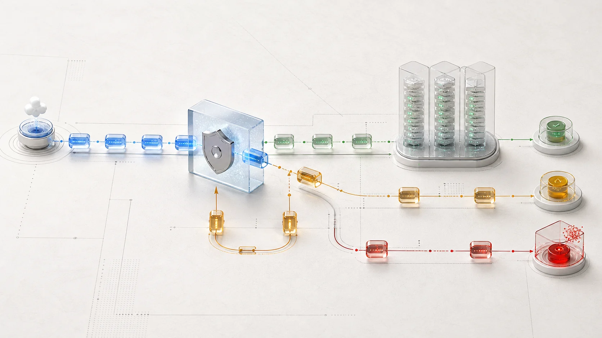
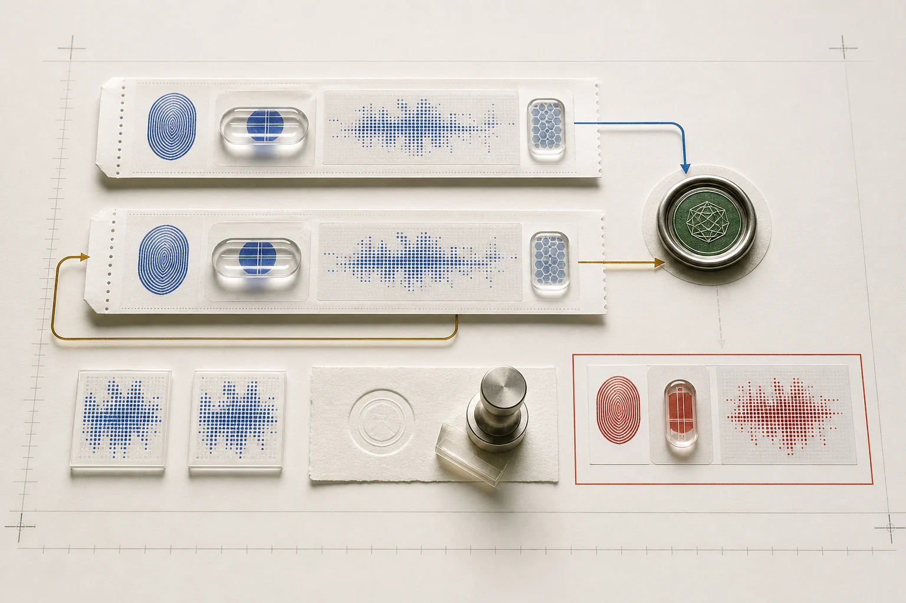

POST /api/webhooksReceiver online · localhost:8080
Every attempt,
accounted for.
A forensic workbench for the awkward space between “we sent it” and “you processed it twice.” Reproduce signed deliveries, watch each gate decide, and leave with evidence safe enough to share.
- Signature
- HMAC-SHA256
- Replay window
- 300 seconds
- Payload retention
- None

01 — Observe
A live delivery stream.
Not a pile of request bodies.
Every accepted attempt leaves a compact evidence trail: identity, age, digest, decision, and timing. Select a row to inspect what the receiver knew.
02 — Trace
One support case,
from allegation to answer.
A merchant says the same payment created two fulfilments. The provider dashboard shows two successful deliveries. Neither observation proves two unique events existed.
Case #WH-1048Duplicate fulfilment after provider timeout
Evidence complete
01 / Incoming report
“The webhook fired twice, so our order was fulfilled twice.”
That sentence joins a delivery fact to a business outcome without proving the idempotency boundary between them. First, recreate the sender’s retry under controlled conditions.
Provider attempts2
Provider responses202 / 202
Unique event IDsUnknown

Two matching delivery fingerprints converge on one atomic claim. The red specimen shows the materially different case: a reused identity with changed content.
✓
Resolution
The provider sent one event twice. The receiver claimed it once.If fulfilment ran twice, the fault is beyond delivery: production likely performs the side effect before, or outside, its idempotency claim.
03 — Decide
Five gates.
One safe order.
Verification is not middleware decoration. The order determines whether untrusted bytes can reach parsing, storage, or business work.
body
timestamp.bodytrusted
sha256(raw_body)digest
BEGIN IMMEDIATEclassify
202 · 202 · 409Unseen ID
Processed
202 · claim createdSame ID + digest
Safe retry
202 · no second claimSame ID + new digest
ID collision
409 · investigate sender04 — Reproduce
Run the incident
on your machine.
The CLI signs provider-neutral fixtures and posts them through the real receiver. Try a known-good delivery, then introduce one failure at a time.
# Install and start the evidence receiver
$ git clone https://github.com/Emmanuelasika/webhook-delivery-debugger.git
$ cd webhook-delivery-debugger && python -m venv .venv
$ source .venv/bin/activate && pip install -e ".[dev]"
$ webhooklab serve --port 8080
✓ receiver listening · signature gate active · payload retention disabled
# In terminal 2, send one event twice
$ webhooklab chaos payment.succeeded \
--event-id evt_pay_81 --duplicate
→ attempt 1 202 processed digest 8f21…d903
→ attempt 2 202 duplicate digest 8f21…d903
→ claims 1webhooklab chaos invoice.created
--invalid-signatureRejected before parsing. No accepted attempt is stored.
webhooklab chaos invoice.created
--staleProves the signed timestamp falls outside the 300s replay window.
webhooklab replay
evt_pay_81A changed body under a claimed ID returns a deliberate conflict.
05 — Share
The evidence you need.
Not the customer data you don’t.
The ledger retains event metadata, timing, classification, and SHA-256 digests. It intentionally does not retain payload bodies. You can attach the result to an escalation without copying an invoice, email address, or card-adjacent field into another system.
- Kept event ID, type, received time, digest, outcome, duration
- Not kept request body, event data, customer fields
Honest scope
A debugging receiver.
Not a production gateway.
Use it for integration development, support reproduction, and incident learning. It does not queue production traffic or replace provider logs. A shared deployment still needs authentication, tenant isolation, encrypted secrets, rate controls, a retention policy, and durable backups.
Read the operating boundaries →